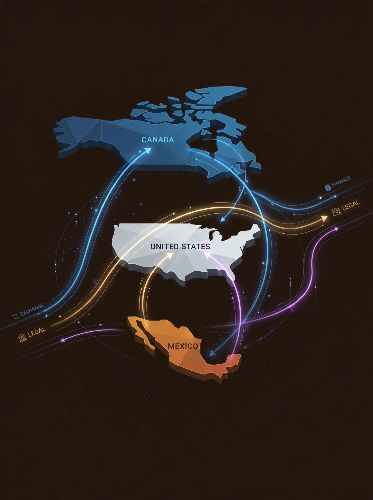

Ten visa and green card pathways. One standard of excellence. Kamkhadze PA handles every employment-based immigration matter with the same depth of preparation and precision of advocacy.
Sciences, Education, Business & Athletics
The O-1A visa is reserved for individuals who have reached the very top of their field — those whose achievements command national or international recognition. It is not a standard work visa; it is a designation of distinction, available only to those who can demonstrate sustained acclaim and the recognition of their peers.
Kamkhadze PA has extensive experience building O-1A petitions that succeed. From researchers with landmark publications to technology executives with a documented record of high-impact contributions, Ana Kamkhadze knows how to translate a remarkable career into a compelling, evidence-based legal petition.
O-1A holders may work exclusively for the petitioning employer but may have concurrent petitions with multiple employers. The visa may be renewed indefinitely in one-year increments as long as the underlying work continues.
Schedule an O-1A ConsultationArts, Motion Picture & Television
The O-1B visa recognizes individuals who have demonstrated extraordinary achievement in the arts, or in the motion picture or television industries. Unlike the O-1A, which focuses on acclaim, the O-1B standard for arts requires a record of extraordinary achievement — a distinction that Kamkhadze PA navigates with precision.
Artists, musicians, actors, directors, choreographers, filmmakers, and entertainment professionals across every creative discipline may qualify. Petitions require a written consultation from an appropriate labor union or management organization, and Ana Kamkhadze guides clients through each step of this process.
Schedule an O-1B ConsultationPermanent Residence Without an Employer Sponsor
The EB-1A is among the most powerful immigration pathways available under U.S. law. It grants permanent residence to individuals of extraordinary ability — and requires no employer sponsorship, no PERM labor certification, and no job offer. It is a self-petition, available to those at the very top of their field.
The standard mirrors the O-1A: sustained national or international acclaim, demonstrated through at least three of ten regulatory criteria. However, as an immigrant pathway, USCIS applies additional scrutiny — the "final merits determination" — evaluating whether the totality of evidence demonstrates that the individual stands among the small percentage at the top of their field. This is where the quality of legal preparation is decisive.
Kamkhadze PA approaches each EB-1A petition with the depth and specificity required to meet this elevated standard. Priority dates are current for most countries of birth, making the EB-1A one of the fastest routes to a green card for qualifying individuals.
Assess Your EB-1A EligibilityInternational Recognition in Academic Research
The EB-1B category provides a permanent residence pathway for researchers and professors who are internationally recognized as outstanding in a specific academic area. Unlike the EB-1A, it requires an employer petitioner and a qualifying permanent job offer — but it offers a green card without PERM labor certification, making it a faster and more direct route for academic professionals.
Qualifying employers include universities, private research institutions with documented research departments, and private companies with at least three full-time researchers. The position must be permanent — a tenure-track professorship or a comparable permanent research role.
Assess Your EB-1B EligibilityPermanent Residence for Senior Leadership
The EB-1C category provides permanent residence to senior executives and managers who have been employed abroad by a multinational company and are being transferred to, or have already transferred to, a related U.S. entity in a managerial or executive capacity. No PERM labor certification is required.
To qualify, the foreign national must have been employed by the multinational organization in a qualifying managerial or executive role for at least one year within the three years preceding the petition or admission. The U.S. entity must have been doing business for at least one year. L-1A visa holders who meet these criteria are well-positioned for EB-1C petitions.
Assess Your EB-1C EligibilitySelf-Petition Green Card for Professionals of National Importance
The EB-2 National Interest Waiver (NIW) allows professionals with an advanced degree or exceptional ability to self-petition for permanent residence — without employer sponsorship and without a PERM labor certification — on the basis that their work is in the national interest of the United States.
Under the framework established by Matter of Dhanasar (2016), USCIS evaluates NIW petitions on three factors: (1) the proposed endeavor has substantial merit and national importance; (2) the petitioner is well positioned to advance the proposed endeavor; and (3) on balance, it would be beneficial to the United States to waive the job offer and labor certification requirements. Kamkhadze PA has built NIW petitions for researchers, scientists, physicians, engineers, entrepreneurs, and creative professionals across a broad range of fields.
Assess Your NIW EligibilityWork Authorization for Degreed Professionals
The H-1B visa authorizes employment in a specialty occupation — one that theoretically and practically requires the attainment of at least a bachelor's degree or its equivalent in a specific field of study. It remains the principal mechanism by which U.S. employers hire foreign professionals, and is subject to an annual cap lottery.
Kamkhadze PA assists clients with H-1B initial filings, cap-exempt employer transfers, extensions, and amendments. Cap-exempt H-1B positions — those at universities, nonprofits affiliated with institutions of higher education, and governmental research organizations — are not subject to the annual lottery and may be filed at any time.
Discuss Your H-1B OptionsManagers, Executives & Specialized Knowledge Workers
The L-1 visa enables multinational companies to transfer qualifying employees from a foreign affiliate, parent, subsidiary, or joint venture to their U.S. entity. The L-1A applies to managers and executives; the L-1B applies to employees with specialized knowledge of the company's products, services, research, or procedures.
L-1A holders are eligible to apply for an EB-1C green card, creating a natural pathway from temporary work authorization to permanent residence. L-1 visas are cap-exempt and may be filed at any time. Blanket L-1 petitions are available for qualifying large multinational companies, enabling expedited processing for multiple employees.
Discuss Your L-1 OptionsInvestment-Based Work Authorization for Treaty Nationals
The E-2 Treaty Investor visa allows nationals of countries that maintain qualifying investment treaties with the United States to enter and work in the U.S. based on a substantial investment in a U.S. enterprise. The investor must direct and develop the investment and must demonstrate that the enterprise is not marginal — that it generates economic value beyond merely supporting the investor and their family.
The E-2 has no fixed minimum investment amount — "substantial" is evaluated relative to the total cost of the enterprise. However, the investment must be at risk, irrevocably committed, and the enterprise must be operational or in the process of becoming operational. E-2 status is renewable indefinitely so long as the qualifying investment continues.
Discuss Your E-2 Investment VisaProfessional Work Authorization Under USMCA
TN status provides nonimmigrant work authorization to Canadian and Mexican citizens employed in certain enumerated professional occupations under the United States-Mexico-Canada Agreement (USMCA). The list of qualifying professions is specific and includes accountants, engineers, scientists, lawyers, physicians (for teaching or research), management consultants, and others.
Canadian citizens may apply for TN admission directly at a U.S. port of entry; Mexican citizens must apply for a TN visa at a U.S. consulate in Mexico. TN status is granted in one-year increments and may be renewed indefinitely, though it is technically a nonimmigrant status that requires the holder to have the intent to depart upon completion of the authorized work.
Discuss Your TN Application